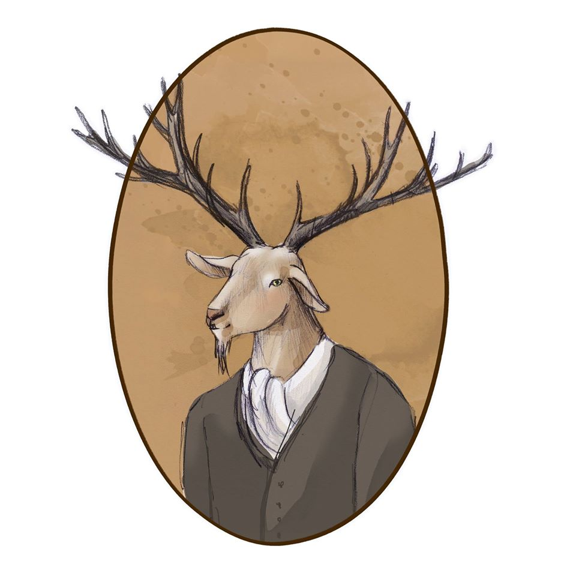

COLLABORATORI:
1) Anastasia
Sono Anastasia, laureata in lingue, amante delle serie tv e divoratrice di libri sin da piccola. Mi sono innamorata della lettura grazie a "Cipí" e "Cion Cion Blu", ma la svolta è arrivata dopo qualche anno prendendo in mano "Dieci Piccoli Indiani" della regina Agatha Christie. Da quel momento mi sono resa conto che il mio genere preferito non poteva che essere tinto di giallo: thriller, polizieschi e noir accompagnano le mie giornate ormai da anni, preferibilmente con una tisana fumante in mano!
Mi trovi qui:
bibliotecadietrolangolo.blogspot.it
2) Amanda
Mi chiamo Amanda, ho 29 anni, vivo in un minuscolo paese sperduto nelle valli torinesi, adoro la mia casa perché essendo immersa nel verde mi permette di vivere a pieno la mia prima passione, ovvero gli animali, infatti sono una studentessa di veterinaria.
Amo la lettura da sempre, non ho mai smesso di leggere anche se a volte gli impegni mi rallentano un pochino. I thriller sono entrati nella rosa dei miei generi preferiti quando ancora ero molto giovane e non mi hanno mai deluso o stufato, proprio non riesco a fare a meno di partecipare ad un’indagine!
Per me non esiste niente di meglio che leggere un buon libro in una fredda giornata invernale accoccolata sul divano con un caffè fumante e i miei cani accoccolati vicino a me.
3) Anna
Mi chiamo Anna e sono laureata in Lettere Classiche. Vivo in un paesino della Puglia, ma il mio sogno è quello di vivere in Germania. Fin da piccola ho sempre avuto una grande passione per la lettura e, in particolare, per i classici e i fumetti. Mi sono avvicinata al genere thriller un po' per caso, nel 2010, entrando in una grande libreria di Lecce, la città dove ho studiato.
Ricordo di non aver mai visto una libreria così grande prima di allora e di esserne rimasta affascinata. Il titolo che catturò subito la mia attenzione fu "L'ipnotista", che era presente in numerosissime copie. Da quel momento è stata thriller mania!
4) Barbara
Amo leggere, giocare ai videogames e guardare le serie tv. Dalla Sicilia al Lazio, dall’Abruzzo alla Puglia, giro l’Italia inseguendo il mio sogno fatto di carta e inchiostro. Ah, dimenticavo, nelle mie vene scorre sangue starwarsiano quindi…May the “book” be with you! ”
Mi trovi qui:
leggendoabari.wordpress.com
5) Betsy
Studia psicologia e neuroscienze senza illusioni, legge per conoscere e migliorare la sua scrittura. Fa racconti brevi e romanzi incompleti in maniera sporadica, pensa troppo. Usa la terza persona per fare la finta alternativa ed ha un blog in cui si ripropone di riportare qualche storia breve scritta da lei. Scrive recensioni su ThrillerNord.
Mi trovi qui:
lastranastoriadibetsy.wordpress.com
6) Celeste
Laureata in Storia, in realtà di professione procrastinatrice. "Perché fare oggi ciò che puoi fare domani?" Seguendo il vademecum del nullafacente, ho trovato sin da piccola nei libri una felice scappatoia: la mia famiglia non poteva rimproverarmi, se rimandavo impegni per leggere, acculturarmi. Ho scoperto proprio così il piacere del dolce rimandare, con un libro in mano. Adesso a 23 anni, una laurea magistrale in Scienze Storiche in corso, sogno un giorno di lavorare in una casa editrice, almeno rimandare impegni con un libro in mano, sarà un impegno stipendiato.
Mi trovi qui: unastanzatuttapermeweb.wordpress.com
7) Cristian
Mi chiamo Cristian e da qualche anno mi sono appassionato alla lettura. Prediligo il genere thriller/poliziesco ma non disdegno il genere legal-thriller. Mi affascina tutto ciò che riguarda un crimine dall'aspetto psicologico del killer, alla scienza forense, ai metodi di ricerca delle prove e delle indagini...
Adoro diversi autori, italiani e stranieri, che scrivono questo genere di libri quindi faccio un pò fatica a sceglierne uno in particolare anche se, la maggior parte, fanno parte del mondo thriller-nordico. Mi piace inoltre leggere libri di autori che non conosco o romanzi d'esordio. Non può mancare la classica visitina settimanale alla libreria di fiducia e cerco di tenermi aggiornato sulle nuove uscite dei libri che mi possono incuriosire. Ciao a tutti e buona lettura...
8) Daniela
Credo di aver sempre amato leggere. Da piccola mia madre mi comprava un libro a settimana.
Ricordo un libro di favole che si è completamente distrutto a furia di leggerlo! Crescendo ho affinato i miei gusti. Leggo di tutto, romanzi rosa, chick–lit, gialli, thriller e fantasy. Ma non ho ancora provato a leggere nulla di horror o fantascienza. Il mio scrittore preferito è Nicholas Sparks. Sono molto contenta di essere entrata a far parte dei collaboratori di Thriller Nord, sarà una piacevole e stimolante sfida!
Mi trovi qui:
leggendoabari.wordpress.com
9) Emanuele
Ciao! mi chiamo Emanuele e ho già un po' di anni sulle spalle, diciamo che preferisco mantenermi sul vago. Amante della letteratura ho da sempre amato leggere, con il passare degli anni ho trasformato questo piacere anche in un confronto con altre persone.
Leggo un po' di tutto con una predilezione per la fantascienza, il fantasy, il thriller nordico e la narrativa contemporanea.
Ho un blog dove mi piace scrivere di me in forma di racconti brevi. Amo la fotografia e mi piace condividere con chi mi segue questa passione.
Ogni tanto ho fatto recensioni di libri per me stesso ora creerò una sezione ad hoc per le recensioni.
buona lettura a tutti.
Mi trovi qui:
cosementali.wordpress.com
10) Erica
Leggo fantasy da quando avevo 7 anni e ora che ne ho 27 ho scoperto una passione per i gialli. Scienziata di formazione, non ho mai abbandonato i libri che adesso recensisco sul mio blog per editori italiani e stranieri. Nata e cresciuta in Sardegna ma trapiantata in Australia, non esco di casa se non ho almeno due libri nella borsa. Qui su ThrillerNord troverete le mie opinioni sulle nuove uscite nel mondo del crime.
Mi trovi qui:
LibrettoReviews
11) Federica
21 anni vissuti tra le pagine di libri, le scene di film e gli episodi di serie tv. La passione per la lettura nasce in tenera età, cresce grazie ai libri di J.K. Rowling e si trasforma dopo l’incontro con Sherlock Holmes, scoprendo il genere giallo e thriller. Lettrice pendolare, tra una lezione e l’altra di ingegneria, ama tuffarsi in storie misteriose e condividere pensieri e impressioni sul suo blog “Stories - Books and movies.
Mi trovi qui: 
storiesbooksandmovies.blogspot.it
12) Fiorella
Ciao, mi chiamo Fiorella Carta e vengo da Buddusò, un piccolo paesino dell' entroterra sardo.
Leggo libri senza figure dall'età di 7 anni, quando mia zia mi regalò I ragazzo della Via Pal di Molnar. Da lì l'amore per la lettura è cresciuto a dismisura. Ho scoperto King e Agatha Christie subito dopo e in adolescenza i grandi classici.
Leggo di tutto, anche se i thriller sono la mia dose di adrenalina preferita.
Se vi va potete seguirmi anche sulla mia pagina Un calderone pieno di libri.
Mi trovi qui:
Uncalderonepienodilibri
13) Giorgia
Da piccola mia mamma si disperava perché odiavo leggere, poi ho scoperto Harry Potter, ho continuato con i romanzi di Jane Austen, e ora eccomi qui a parlare continuamente di libri. Adoro girare per le librerie, comprare libri nuovi e usati, e leggere ascoltando musica.
Non ho un genere preferito, ma scelgo le mie letture in base al sentimento che mi suscitano le trame e le copertine.
Vi parlo di tutto questo nel mio blog
Mi trovi qui: 
sognandodietroailibri.blogspot.com
14) Giovanna
Sono Giovanna, ho 27 anni, sono pugliese e da che ho memoria mi circondo di libri.
I classici sono stati il mio primo grande amore: Jane Austen, Emily Bronte, Flaubert, Tolstoj. Quando ho scoperto gli italiani, Buzzati e Moravia soprattutto, ho capito che non me ne sarei mai più separata. Ed è così. Tutto nella mia vita è impregnato di quelle pagine: i miei studi, il mio lavoro, il mio tempo libero. Il blog è nato proprio per questo, perché avevo tanto da dire e tutto andava canalizzato in un “posto” che fosse mio.
Mi trovi qui:
thebookworm.wordpress.com
15) Giuseppe
Esistito nel tardo Olocene, in un periodo intermedio dell’era Quaternaria, ad oggi di lui sappiamo poco. Pare che si sia dedicato agli studi della sociologia e dell’antropologia culturale, che si sia fatto tremendamente corrompere da folli idee di poesia e letteratura. Irrimediabilmente curioso, amante della letteratura tutta con particolare predilezione per la mitteleuropea e italiana e per i classici, sedotto da poemi d’ogni epoca e della cultura asiatica e mediorientale, attratto dalle atmosfere nordiche, di lui ci restano opere di scarsa importanza.
Mi trovi qui: 
ilrifugiodellircocervo.wordpress.com
16) Ilaria
Sto per festeggiare le mie nozze d'argento con i libri, la nostra unione è cominciata ufficialmente quando ho imparato a leggere, a 6 anni, e sento che non ci lasceremo mai, tanto è vero che me li sono tatuati sulla pelle. Sì, una prova del mio amore verso il meraviglioso mondo della letteratura è incisa sul mio avambraccio sinistro: una pila di libri chiusi ed un ultimo aperto da cui esce la scritta “I've lived a thousand lives”. Quando leggo mi lascio andare, mi faccio trasportare dalle parole ed ogni storia mi lascia qualcosa, cosa che proverò a comunicare anche a voi nelle recensioni che farò qui per ThrillerNord.
17) Ilaria Murgia
Sono Ilaria, ho 26 anni e vivo a Cagliari. Segni particolari: ho sempre un libro sul comodino! La passione per
i libri mi è stata trasmessa da mia madre,vera appassionata del genere thriller! A sei anni ho imparato a
leggere e non ho più smesso. Adoro in particolare i libri che narrano storie vere, ma leggo davvero di tutto.
Da qualche mese ho aperto un blog nel quale pubblico le recensioni dei libri che leggo e le citazioni che più
mi hanno colpito. Mi trovate anche su Twitter e Instagram col nome Scaffali da leggere.
Mi trovi qui: 
scaffalidaleggere.wordpress.com
18) Isabella
Mi chiamo Isabella e vivo in Piemonte, in provincia di Torino.
Ho imparato a leggere già da piccolissima ed insieme alla musica ed alla vita all'aria aperta è diventato uno dei miei passatempi preferiti in pochissimo tempo.
Affezionata al libro cartaceo ho accolto con scetticismo l'evoluzione al digitale: una volta acquistato l'e-reader, però, ho scoperto di non riuscire a farne a meno. Leggo molto di più, non mi stanco gli occhi e riesco ad apprezzare tanti di quei romanzi che non ho mai letto per svariati motivi. I miei generi perferiti sono il Fantasy ed il Thriller: proprio per condividere questa passione ho un lit-blog all'attivo e, con altrettanto impegno, cercherò di dare il mio contributo in questo bel progetto!
Mi trovi qui: 
boscodeisognifantastici.blogspot.it
19) Laura
Sono Laura ed ho una doppia vita: di giorno faccio la farmacista e di sera mi trasformo in una serial reader. Amo viaggiare e parlo tre lingue straniere. Mi piace tantissimo leggere in lingua originale, senza il filtro della traduzione che a volte snatura lo stile dei testi. Negli ultimi anni ho unito la passione per la lettura a quella per i viaggi: adoro visitare i luoghi descritti nei libri e calarmi nelle atmosfere che hanno ispirato un autore.
20) Laura Franchini
Ciao a tutti, sono Laura e sono una compratrice ossessivo-compulsiva di libri.
Devo confessare che da piccola non amavo leggere e solo adesso mi rendo conto di quante cose io mi sia persa nel corso degli anni; grazie al cielo, però, crescendo ho imparato ad amare i libri - soprattutto i thriller e i fantasy - e a farmi trasportare in tutte le loro storie.
Da poco (maggio 2016) ho aperto un blog letterario tutto mio, The BooksCatcher.
Mi trovi qui: 
The BooksCatcher.blogspot.it
21) Loredana
Sono Loredana, e sono un libro con dentro tanti altri libri, amo la poesia, l'arte e la musica.
Leggere è però ciò che in assoluto preferisco, perché è la mia finestra sul mondo!
"I libri sono i miei amici Silenziosi"
Sono cresciuta con Delitto e Castigo di Dostoevskij che rileggerei mille e mille volte ancora, spazio tra i vari generi dalla narrativa straniera alla saggistica, sono arrivata ai thriller contemporanei con Faletti e oggi sono innamorata dei thriller del Nord.
Sono una persona semplice che ama leggere, e spero di regalare a chi mi legge, un momento speciale, unico.
22) Loreta
Vivo in una piccola città costiera dove ho tutto quello che mi serve: il mare, una buona scorta di pasticcerie e una montagna di libri.
Ho iniziato a sgranocchiare dolci e romanzi fin dalla prima infanzia e non ho intenzione di smettere a breve.
Nel tempo libero, studio fisica e cerco di risolvere i misteri dell’universo; mi interesso alle culture scandinave (e mi piace pensare che prima o poi sarò in grado di parlare il finlandese), scrivo storie ambientate in universi fantastici e mi impegno a provare che gli unicorni esistono davvero.
Mi trovi qui:
ilrifugiodellircocervo.wordpress.com
23) Manuela
Ciao, sono Manuela, sono romana ma per amore mi sono trasferita in un paesino della Tuscia, dove vivo con un marito che condivide la mia passione per la lettura e un piccolo omino di due anni e mezzo, che cresciamo a suon di baci e libri.
Ho studiato restauro e conservazione dei beni culturali, amo l’arte ma mai quanto i libri. Leggo da sempre e leggo ovunque, un’attesa dal dottore, un tragitto in treno, la fila alla posta, ogni momento è buono per leggere qualche pagina. Ho un lettore e-book ma sono una fan della carta e adoro scovare libri nei mercatini dell’usato, negli angoli del book crossing per non parlare della biblioteca, che dopo la Galleria Borghese, è il mio posto preferito nel mondo!
Adoro cucinare e sperimentare nuove piatti, mi piace avere sempre “le mani in pasta”, trovare ricette nei romanzi che leggo mi entusiasma, gli odori sono ottimi compagni di lettura, aiutano a immergersi nelle storie.
La mia preferenza è sempre andata alla narrativa ma spazio tra i generi e da qualche anno mi sto appassionando a thriller e gialli, spero di tenervi buona compagnia con le mie recensione!
24) Mara
Ho quasi 25 anni, abito a Potenza, una città dove non succede mai nulla e dove l’attrattiva principale consiste nel passeggiare avanti e indietro per il centro storico, sono laureata in Studi Letterari, Linguistici e Storico - Filosofici, che detto così sembra una grande figata, invece è solo un modo alternativo per sottolineare che non si tratta né di pane né di focaccia e attualmente sto frequentando un Master in Traduzione Specialistica Inglese > Italiano.
Leggo praticamente da sempre, da quando mio padre mi regalò a 6-7 anni Favole al telefono di Gianni Rodari. Amo il genere Fantasy, a cui difficilmente rinuncio, ma non disdegno neanche i Gialli, i Thriller (altrimenti non sarei qui), i Noir, i YA e i Contemporanei.
Uno dei miei autori preferiti di sempre è Ian McEwan.
Sono anche una fanatica di cinema, di serie TV, di musica e di strumenti musicali (chitarre e violini soprattutto).
Mi trovi qui:
bookslikerain.blogspot.com
25) Marco
A circa 11 anni mi hanno regalato Dieci Piccoli Indiani che ho letto in un pomeriggio e da lì l’amore per il thriller, noir ,giallo non è ancora terminato. Ellroy e David Peace sono i miei autori culto, ma Nesbø e i nordici sono stati una stupenda scoperta.
Ogni settimana è d’obbligo la visita in libreria alla ricerca di un libro o anche solo per sfogliare o poter pensare di leggere qualcosa di nuovo. In oltre 40 anni (purtroppo) ho letto tantissimi thriller ma ancora li approccio come un ragazzino al primo appuntamento; sono felice di far parte di questo bellissimo gruppo e di poter leggere e raccontare ciò che più mi piace.
26) Marianna
Ciao sono Marianna,
ho sempre amato leggere fin da piccola e di conseguenza scrivere.
Leggo principalmente fantasy, romanzi storici e thriller/gialli/noir, ma spazio anche su altri generi perché la compagnia di un buon libro fa sempre piacere.
E' un allenamento per la mente e un riposo per l'anima.
Da un po' di tempo ho creato un blog culturale che raccoglie un po' di tutto e dove pubblico le mie recensioni.
Quindi...buona lettura!
Mi trovi qui:
marisullealidellafantasia.blogspot.it
27) Maria Sole
Ciao, sono Maria Sole, da Pisa. Sono una biologa con formazione classica che lavora alla facoltà di economia...bel mix, no? Il primo libro che ho letto è stato "Quo vadis?", alle elementari.
Da lì, non mi sono più fermata, soprattutto da quando esistono gli e-reader. Amo molti generi diversi (niente di troppo romantico, però...) ma prediligo il giallo classico ed il thriller.
Ho sempre un libro in borsa, perché il tempo di leggere qualche riga si trova sempre. Amo anche fare le recensioni, perché mi permettono di riflettere meglio sul significato di un libro e sulle sensazioni che mi ha lasciato.
28) Marina
Sono l’unica Marina – Marylou– e l’unica friulana del Gruppo. Tanti interessi e curiosità, due passioni sopra le altre: Libri & Scrapbooking.
Per quanto concerne la lettura: leggo quasi tutto.
Quest’anno ho voluto implementare gli autori italiani, per godermi le parole senza intermediazioni di traduzioni.
E vorrei ampliare anche il settore gialli e thrillers.
Mi piace leggere ma anche raccontare, parlare e scrivere dei libri che leggo. Vorrei creare un Gruppo di Lettura nella mia città, per parlare un po’ di più di ciò che leggo, ma anche per fare appassionare altre persone ai libri.
La notte mi vede protagonista, per necessità e perché con il buio, il silenzio e la quiete mi pare si apra un mondo più confacente alle mie passioni.
Mi trovi qui:
librodopolibro.com
29) Paolo
A febbraio 2012 ho dato vita al blog "Il consigliere letterario", un po’ per sfogare, condividendola con quante più persone possibile, la mia passione per i libri, un po’ con l’idea di trasformarlo, con il tempo e un pizzico di fortuna, in uno strumento di lavoro.
L’idea è di rivolgermi a librerie, associazioni culturali, biblioteche, e creare assieme a loro (nelle librerie stesse, nelle biblioteche) spazi di confronto dove chiacchierare dell’ultimo romanzo letto, di un autore suggerito, di un libro che ancora non si sa se acquistare o meno.
Chissà che tra voi lettori non ci sia qualcuno interessato, o magari solo incuriosito… io lo spero.
Mi trovi qui:
ilconsigliereletterario.com
30) Patrizia
Penso che tra le giornate interminabili pieni di impegni, una delle cose più importanti sia quella di ritagliarsi del tempo. Per leggere fumetti, per leggere libri, per guardare serie tv o anche solo per fantasticare. Adoro tante cose ed è una fortuna!
Cime tempestose è il mio libro preferito e Heathcliff è il mio personaggio preferito di tutta la letteratura. Amo i classici, ma adoro anche le letture strane e distopiche o ambientate in mondi impossibili. Ho scoperto, grazie ad Agatha Christie, che il genere dei gialli mi piace e ho scoperto inoltre di essere diventata intollerante alle saghe fantasy, soprattutto quelle che oltrepassano la soglia della trilogia.
Sono molto contenta di essere entrata a far parte di questo bellissimo progetto che è Thriller Nord.
Buona permanenza a tutti!
Mi trovi qui:
leggendoabari.wordpress.com
31) Silvia
Sono Silvia, 47 anni, della provincia di Cremona.
Leggo un po' tutti i generi, ma i thriller superano di gran lunga gli altri.
Leggo sia cartacei (che acquisto e prendo in biblioteca) ed ebook su un kindle vecchio modello e un kobo (che acquisto e prendo in prestito gratis da medialibraryonline).
Pratico yoga, meditazione, e Reiki tradizionale giapponese. A tempo perso (!!!!!) lavoro come operatore socio sanitario e faccio mamma taxi. Non ho un mio blog, o pagina, in cui occuparmi delle mie letture... Mi piace pubblicare post con le mie impressioni e valutazioni dei libri su alcuni gruppi facebook.
Onorata di essere entrata a far parte di questo team!
32) Simona
Ciao a tutti, mi chiamo Simona e sono della provincia di Lecco dove vivo con la mia famiglia. Lavoro e mi piace trascorrere il mio tempo libero leggendo. Sono una lettrice e accumulatrice di libri ossessivo- compulsiva senza speranza di guarigione; onnivora nei gusti letterari con voi condividerò le mie impressioni sui thriller di autori italiani.
Buone letture!
33) Stefania
Sono Stefania.
Ho 21 anni e amo incondizionatamente leggere. Leggo libri dall'età di sei anni, ho iniziato con piccole storielle illustrate, da lì è nata in me una passione che mi ha portato a diventare una vera "divoratrice di libri ". Il mio sogno nel cassetto è di scrivere un libro tutto mio. Possiedo un blog dove recensisco i libri che leggo.
Mi trovi qui: 
La biblioteca di Stefania.myblog.it
34) Valentina Sanzi
Sono Valentina, Vale per la maggior parte delle persone, ho 22 anni, studio Giurisprudenza e fin da quando ne ho memoria ho sempre tenuto un libro in mano. Ho iniziato a leggere fin da piccola e negli anni ho sviluppato un amore incondizionato e sconfinato per la lettura. Ho molti altri hobby, ma questo è in assoluto il più grande, quello che dopo una giornata faticosa mi accoglie a braccia aperte, mi fa sognare, quello che spesso mi fa sentire amata. Da poco più di un anno mi occupo grazie a due persone stupende di un blog letterario, Il Colore dei Libri, che mi sta regalando soddisfazioni enormi.
Mi trovi qui:
ilcoloredeilibri.blogspot.it
35) Valentina
Mi chiamo Valentina e abito a Villasor, un piccolo paese in quella che è la mia bellissima Sardegna. Sono una lettrice/compratice/divoratrice seriale di libri e caramelle gommose, due vizi ai quali non riesco mai a dire di no. La mia passione per i libri risale a tanti anni fa quando in terza elementare mia madre mi regalò la Divina Commedia per bambini: da quel momento i libri sono miei migliori amici. Sebbene prediliga il genere thriller che mi hanno fatto conoscere Michael Connelly e Patricia Cornwell, in realtà adoro leggere qualsiasi libro, per questo nella mia libreria non mancano Jane Austen o gli altri, grandi, Autori classici.
"Non importa quanto farai tardi, i tuoi libri saranno sempre lì ad aspettarti"
36) Valeria
Il mio amore per la lettura è scoppiato piuttosto tardi, verso i 13 anni, quando mia madre mi regalò "Le nebbie di Avalon" di M.Z.Bradley. Da quel momento è sempre cresciuto portandomi alla ricerca di nuovi autori e generi diversi. Ho condiviso la lettura dei gialli di Agatha Christie con la mia famiglia facendo a gara per indovinare l'assassino. Negli anni (ne ho 42!) ho apprezzato molti autori italiani ( Eco, Benni, Carofiglio, Faletti) e altrettanti autori stranieri moderni e classici ( Dickens, Brontë, Dumas, Foer, MCcarthy, Steinbeck). Non ho un genere preferito, vario le letture a seconda dell'umore e delle emozioni di cui sono in cerca. Sono decisamente una lettrice compulsiva ed ho due passioni: Stephen King e i romanzi inglesi dell'Ottocento.